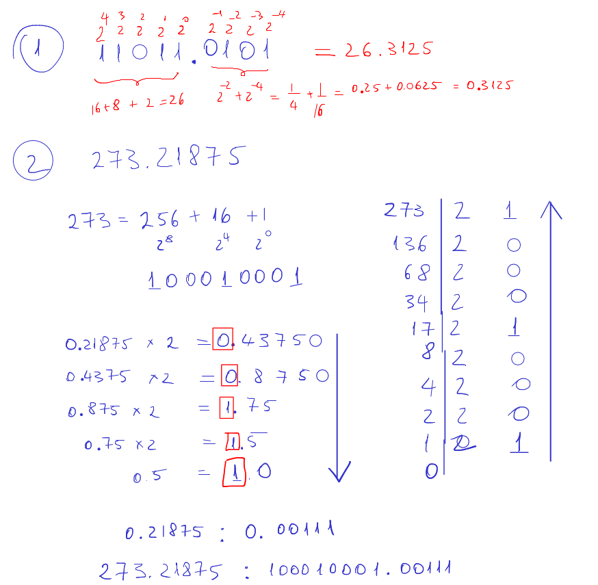

Effects of signal quantization in digital filtering
Lab 11, SDP
1 Objective
Students should observe the effects of internal quantization errors on the output signal of a digital filter.
2 Theoretical notions
Binary representation of fractionary numbers

TBD
3 Theoretical exercises
Consider the system with the following difference equation:
\[y[n] = \frac{1}{2}y[n-1] + x[n]\]
Compute the first 6 samples of the response to the input signal \(x[n] = \left(\frac{1}{4}\right)^n\), in three different ways:
- Computations with infinite precision
- Computations with fixed-point 1S0I4F format, quantize by truncation
- Computations with fixed-point 1S0I4F format, quantize by rounding
4 Practical exercises
- In Matlab, write a script file to study the quantization of the
mtlbsignal on \(N=8\) bits.- Load the predefined
mtlbsignal (useload mtlb); - Figure out if a sign bit is needed or not;
- Find the maximum absolute value of the signal, and figure out the number of bits required for the integer part. The remaining bits with be allocated to the fractionary part;
- Use the function
fixdt()to create the corresponding fixed-point data type; - Use the function
num2fixptto convert the signalmtlbto the fixed-point data type, using all the three quantization methods; - For all the three quantization methods, visualize the quantized signal, the quantization error, and compute the total energy of the quantization errors. Which quantization error produces minimum errors?
- Play the quantized signal. Can you hear the difference from the original signal?
- Load the predefined
- In Matlab, create a function to implement the system from exercise 1. The values shall be quantized after each multiplication and addition. Apply at the system input the quantized signal from exercise 2, and display the output.
5 Final questions
- TBD